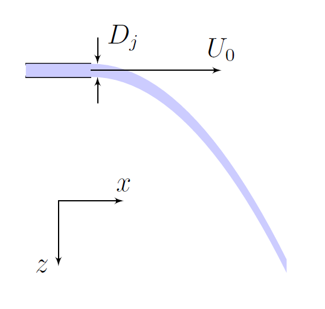
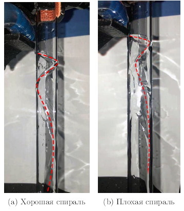
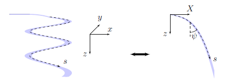
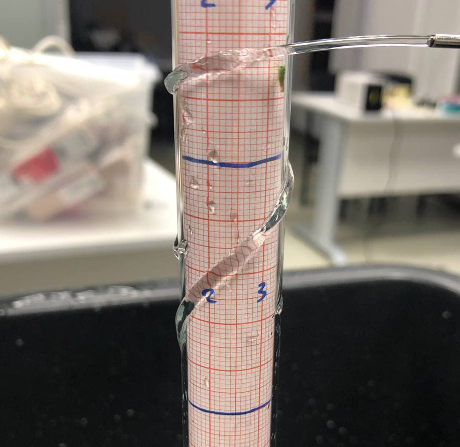
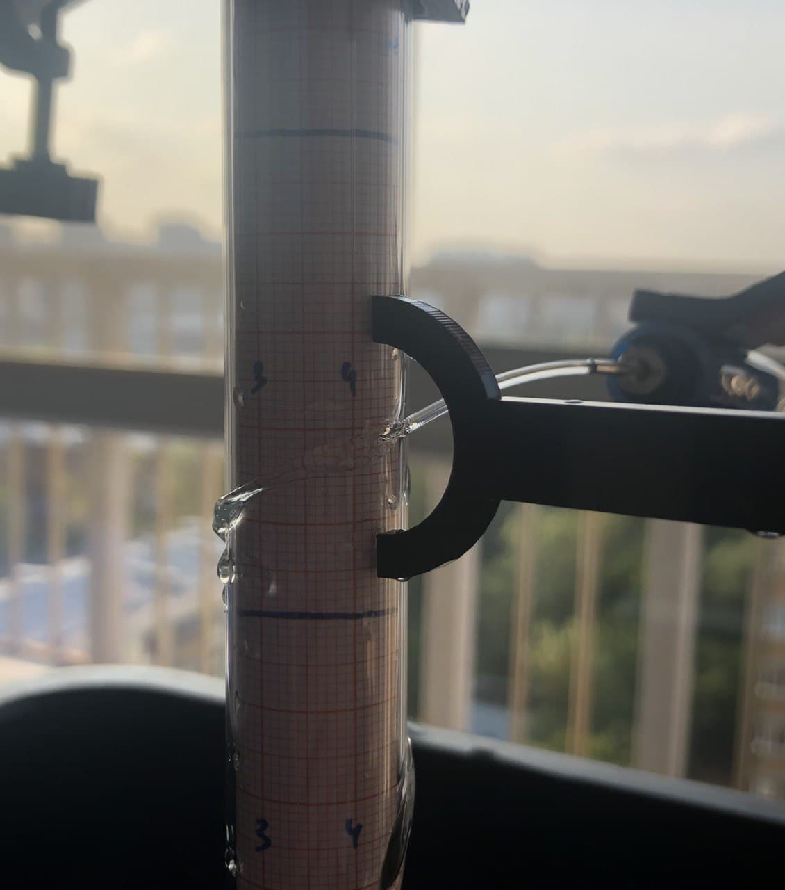
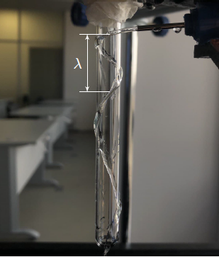
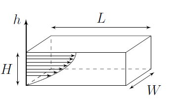
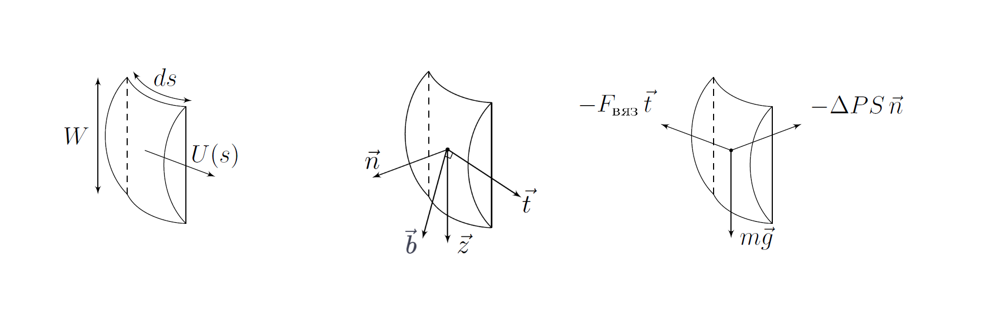
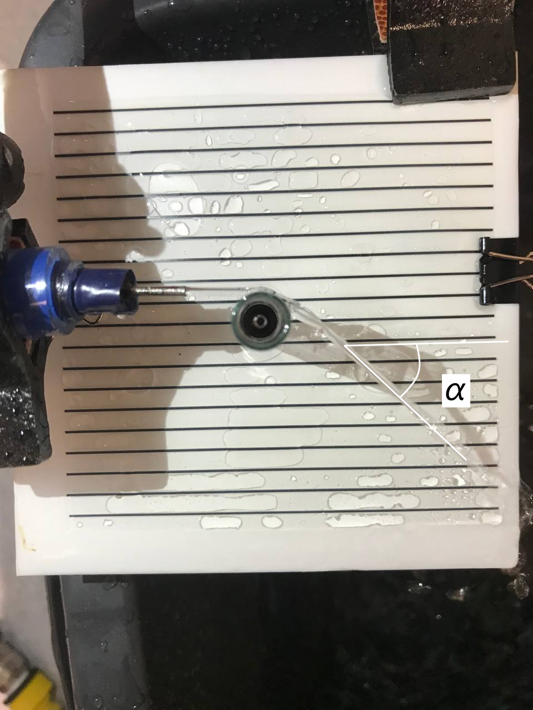

Fig. 1.
X22 (2022) — English translation
$\textbf{Внимание!}$ No error calculations are required in this work, except for Part A.
In everyday life, we often observe that a flow of liquid “sticks” to a solid surface. This effect is commonly called the "teapot effect" and occurs in the following processes: inkjet printing and extrusion - producing products by forcing a viscous melt of material or thick paste through a forming hole. In this work, we will quantitatively study the “teapot effect” manifested in the interaction of a cylindrical glass tube and a flow of water, and, as a result, we will obtain a spiral of liquid wrapped around the tube.
Mariotte vessel with a hose outlet with a nozzle and a tap Tap on a hose Three stands Four legs Four couplings Large container Napkins 6 test tubes of different diameters Sheets of graph paper Sheet of cardboard Protractor Measuring cup Scissors Stopwatch U-shaped pointer Screen with parallel lines Clips
External diameter Internal diameter 1 2.05 1.82 2 1.59 1.37 3 1.37 1.16 4 1.20 1.03 5 0.98 0.81 6 0.96 0.77
The jet leaving the nozzle is deviated from the straight direction under the influence of gravity. We can use this fact to find the initial flow velocity $U_{0}$. Let us denote the trajectory of water drops as $z(x)$, where $z$ is the vertical coordinate, $x$ is the horizontal coordinate in the plane of the curve.

Fix the test tube in a vertical position and direct the stream of water as in the figure. Ensure that the jet makes as many revolutions as possible along the surface of the test tube; to do this, you can change the vertical position of the needle to increase or decrease the flow speed and move the test tube so that the flow of water is directed as close to the tangent as possible.
$\textbf{Внимание!}$ 1. In parts B and C, the stream should hit test tube $\textbf{горизонтально}$. 2. In parts B and C, it is necessary to maintain the same initial conditions with high accuracy. As a possible solution to this problem, it is proposed to install the needle horizontally, and also bring it as close as possible to the test tube, which will guarantee a constant value of $U_0$. 3. After measuring the last point, place the U-shaped pointer as shown in the photo below and close the tap. Do not move any of the stands until you have completed all measurements in parts B and C. 4. Laminar flow of water is very important in this experiment, so make sure that at the height you are testing, the stream is laminar for 20 centimeters. This is achieved by selecting the height at which the needle is fixed. 5. The Mariotte vessel is designed to be tight, so as the water flows out, characteristic sounds (gurgling) should be made from time to time. If this does not happen 10 minutes after opening both taps, contact the auditorium attendant.

Now temporarily close the tap. For a quantitative description, we introduce the following notation. Let a jet of liquid of density $\rho$ with a volumetric flow rate $Q$ move with a speed $U$ in a spiral wound onto the surface of a vertical cylinder. Let's call the angle between the vertical and the direction of the jet $\psi$. Let the width of the jet be $W$ and its cross-sectional area $A$. Moreover, due to the presence of viscosity inside the jet along its thickness, there is a certain velocity distribution, therefore the speed $U$, which we introduced earlier, is in some way a fictitious value and simply connects the volumetric flow rate $Q$ and the jet area $A$ using the formula $Q = AU$. We describe the spiral using coordinates $(X(s), z(s))$, where $s$ is a natural parametrization, i.e. $ds^2 = dX^2 +dz^2$. In the Cartesian coordinate system, then the spiral will look like: $$ \vec{r} (s) = \left( \begin{array} \ R \sin{ \left( \frac{X(s)}{R} \right)} \\ R \cos{\left( \frac{X(s)}{R} \right)} \\ z(s) \end{array} \right) $$

You are invited to experimentally study the dependence $z(X)$. The following method is suggested: make additional marks on a sheet of graph paper to make it easier for you to navigate, then roll it up and insert it into the test tube so that the sheet fits tightly to it.

$\textbf{Внимание!}$ 1.) In parts B and C, the stream should hit test tube $\textbf{горизонтально}$. 2.) Parts B and C need to keep the same initial conditions with high precision. As a possible solution to this problem, it is proposed to install the needle horizontally, and also bring it as close as possible to the test tube, which will guarantee a constant value of $U_0$. 3.) After measuring the last point, place the U-shaped pointer as shown in the photo below and close the tap. Do not move any of the stands until you have completed all measurements in parts B and C. 4.) Laminar water flow is very important in this experiment, so make sure that at the height you are testing, the stream is laminar for 20 centimeters. 5.) The Mariotte vessel is hermetically sealed, so when the taps are open, characteristic sounds should be emitted from the vessel from time to time. If this does not happen 10 minutes after opening both taps, then you need to contact the auditorium duty officer.

The theory that we will develop in part $D$ predicts $\textit{неинтуитивную}$ the dependence of $z(X)$ on the radius of the test tube $R$ under fixed initial conditions $U_{0}, \psi_0$. However, for the convenience of conducting the experiment, we propose to measure before starting theoretical calculations how $R$ affects the jet parameter $\lambda$ - the height to which water flowing in a spiral descends in one whole revolution. When you try to get a spiral on a test tube of a smaller radius, you may simply get a jet that deviates at some angle. In this case, you can lean the stream closer to the test tube, i.e. ignore the fact that the jet must be as close as possible to touching the test tube.

In this part of the work, all numerical calculations are proposed to be performed using the necessary data from part B.
For further work with the theory, it is proposed to approximate the dependence $\psi (s)$ by a parabola. We will now describe how to do this in the case where the extremum is far from $x = 0$. 1. Let us describe the set of pairs $\{x_i; y_i\}$ by the formula $y = ax^2 + bx + c$. 2. Let us write the deviation function: $$ \sigma (a, b, c, \{x_i, y_i \}) = \sum \limits_i (y(x_i) - y_i)^2 = \sum \limits_i (ax_i^2 + bx_i + c - y_i)^2 $$ 3. Приравняем к нулю частные производные $\frac{\partial \sigma}{\partial a} = \frac{\partial \sigma}{\partial b} = \frac{\partial \sigma}{\partial c} = 0$. Решение данной системы уравнений будет является минимумом функции $\sigma (a; b; c; \{x_i, y_i \} )$, так как она является квадратичной формой относительно $a$, $b$ и $c$ и устремление $a \rightarrow \infty$, $b \rightarrow \infty$ или $c \rightarrow \infty$ очевидным образом устремляет $\sigma \rightarrow \infty$. 4. Из полученной системы линейных уравнений найдём $a$, $b$ и $c$. Оптимальность коэффициентов $a$, $b$ и $c$ is guaranteed by the minimality of the error function.
To build the theory, we will use the following theses: 1. “Pressing” the water flow to the test tube provides a pressure difference $\Delta P$ between the inner and outer parts of the stream. 2. The jet is acted upon by a viscous friction force with a viscosity coefficient $\eta$. We define viscosity through the force acting on a unit area of the liquid due to the presence of a certain gradient of the parallel component of the velocity of this surface: $$ F_{\text{вяз}} = \eta S \cdot \frac{dv}{dz}. $$ Let's abstract from our spiral to solve a small auxiliary question.

We will assume that the distribution of $u(h)$ inside our jet coincides with that described in point B1. We simply take into account the difference in the geometry of the section from a rectangle in the form of a constant dimensionless factor $C$, i.e. if you got the answer $F_{\text{вяз, 1}} = f(U_{\text{пов}}, H, W, L, \eta)$ in D2, then a force $F_{\text{вяз, 2}} = C \cdot f(U_{\text{пов}}, H, W, L, \eta)$ acts on a section of the jet of length $L$. We will also assume that the width of the jet $W$ does not change when moving along the spiral and is equal to the diameter of the jet $W = D_j$ at the exit from the source. $\textit{Примечание:}$ If you did not do point A3, then consider $D_j = (2.00 \pm 0.04) \ \text{мм}$ known.

In paragraphs D4 - D8 we will describe the dynamics of a section of a water spiral of length $ds$.
To check the obtained value $C$, we numerically solve the system of equations obtained in step D8 iteratively: $$ \begin{cases} U(s + \Delta s) \approx U(s) + \cfrac{dU}{ds} \Delta s \\ \psi (s + \Delta s) \approx \psi (s) + \cfrac{d\psi}{ds} \Delta s \end{cases} $$
We will study the observability of the spiral depending on the initial flow velocity $U_0$. Let's consider a situation when the flow speed is so high that a spiral does not form, and the water flow simply deviates by some angle $\alpha$ from the initial direction. Try to ensure that the flow of water when touching the test tube is as close to horizontal as possible, and its initial direction is as close to the tangent as possible.

$\rho = 1.00 \ \text{kg/м}^3$ $\eta = 8.9 \cdot 10^{-4} \ \text{Па} \cdot \text{с}$ $g = 9.8 \ \text{m/s}^2$
Source: https://pho.rs/p/507